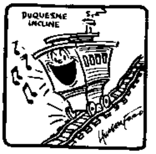

Duquesne Incline
Home
About
Contact
Visit
CITATIONS FOR IMAGES
Images of Duquesne Incline courtesy of:
•
Duquesne Incline Facebook
•
David Dicello Photography
•
License-Free Stock Images
Descriptions and Narratives courtesy of:
•
Official Website of Duquesne Incline
•
World Wide Web Site for Duquesne Incline
Icons courtesy of:
•
Icons DB
Easter Egg: Hungerford Cartoon of a Happy Incline Car
